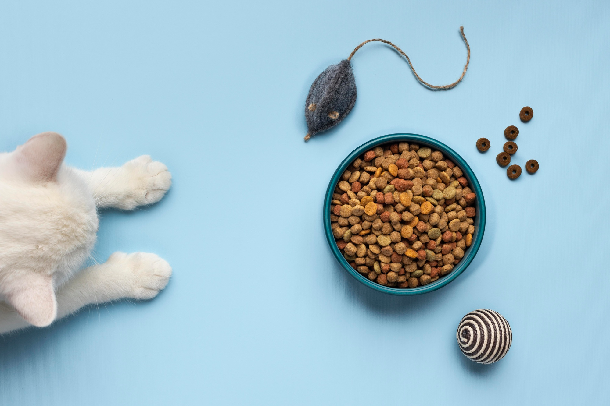

#}
{# #}
#}
{# #}
'گربه ها'
غذای گربه ها
چه غذایی برای گربه ها بهتر است؟
گربه ها حیوانات گوشت خواری هستند، به همین سادگی ، آنها برای داشتن زندگی با طول عمر بالا و عالی باید پروتئین استفاده کنند . گوشت گاو پخته شده، مرغ، بوقلمون و مقادیر کمی گوشت اغذیه فروشی بدون چربی راهی عالی برای این کار است. البته گوشت خام یا فاسد می تواند گربه شما را بیمار کند.
گربه ها چه نوع غذایی می خورند؟
گربه ها گوشت خوار هستند. آنها همچنین تنوع را دوست دارند، بنابراین ممکن است با خوردن غذای تکراری روز به روز راضی نباشند.برخی از غذاهای غنی از پروتئین که گربه ها دوست دارند بخورند عبارتند از:انواع ماهی ها مانند سالمون، قزل آلا، تن و ماهی سفید.طیور مانند مرغ، بوقلمون و قرقاول.گوشت گاو.
آیا گربه ها می توانند برنج بخورند؟
ممکن است در بسیاری از رژیمهای غذایی انسان یک ماده اصلی باشد، اما آیا گربهها میتوانند برنج بخورند؟ الان برای گربه ها خوردن مقداری برنج پخته شده بی خطر است. شما همچنین ممکن است برنج را در تعدادی از غذاهای گربه مشاهده کنید، زیرا می تواند به یک غذای متعادل تغذیه ای برای گربه کمک کند.
چه غذاهایی گربه ها را خوشحال می کند؟
7 غذای سالم انسان برای گربه ها که لذت بخش است عبارتند از : سبزیجات. اگر متوجه شدید که گربه شما گیاهان آپارتمانی را می جود، ممکن است در رژیم غذایی خود به فیبر بیشتری نیاز داشته باشد.غلات کامل. غلات کامل یا تصفیه نشده غذای بسیار خوبی برای گربه هستند. ... تخم مرغ پخته شده ، پنیر ، آووکادو ، گوشت ، ماهی.
آیا می توانیم به گربه شیر بدهیم؟
حقیقت این است که بیشتر گربهها به لاکتوز حساسیت دارند، بنابراین دادن شیر گاو به آنها میتواند باعث مشکلات سلامتی قابل توجهی شود. شیر بخشی از تغذیه ضروری گربه نیست و بسیاری از گربهها از ناراحتی معده یا سایر مشکلات مرتبط رنج میبرند و متاسفانه صاحبشان فکر میکنند که به آنها غذای خوبی میدهند.

Meet podcaters

Taylor

Modeling
Fashion

William
Creative
Design

Chan
Education